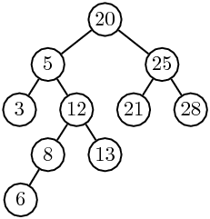
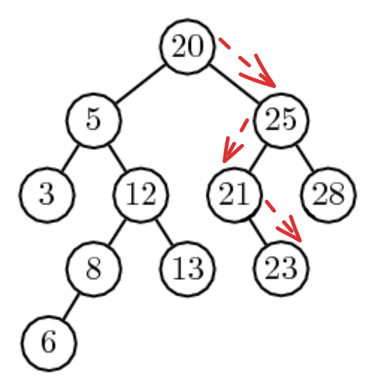
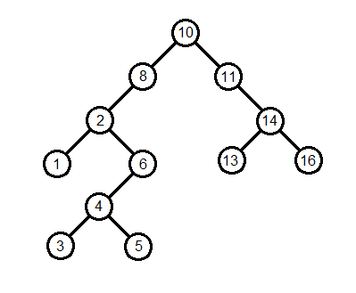

Arbres Binaires de Recherche
Introduction
Supposons qu'on dispose d'une liste de 1 000 000 d'entiers et qu'on cherche à savoir si la valeur 42 en fait partie.
- Dans une liste non triée, on est obligé de parcourir tous les éléments un par un → O(n)
- Dans une liste triée, on peut utiliser la recherche dichotomique → O(log n)
- Mais insérer dans une liste triée reste coûteux, puisqu'il faudrait décaler tous les éléments plus grands → O(n)
Il nous faudrait donc une structure qui permette à la fois une recherche et une insertion efficaces.
Pour cela, nous allons utiliser un type particulier d'arbre binaire : l'arbre binaire de recherche (ABR).

On remarque que pour chaque nœud : - toutes les valeurs dans son sous-arbre gauche lui sont inférieures - toutes les valeurs dans son sous-arbre droit lui sont supérieures ou égales.
Exercice
1) Donner tous les ABR formés de trois nœuds et contenant les entiers 1, 2 et 3.
2) Dans un ABR, où se trouve le plus petit élément? En déduire une fonction minimum(a) qui renvoie le plus petit élément de l'ABR a. Si l'arbre a est vide, alors cette fonction renvoie None.
3) Écrire une fonction compte(x, a) qui renvoie le nombre d'oсcurrences de x dans l'ABR a.
Insertion d'un élément
Un nouvel élément inséré dans un ABR sera toujours une feuille. En partant de la racine, nous allons chercher sa place :
- S'il est plus petit, nous allons à droite
- S'il est plus grand ou égal, nous allons à gauche
- Si nous tombons sur un arbre vide, c'est que nous pouvons l'insérer ici
Exemple : nous voulons insérer un Noeud contenant la valeur 23.
23 >= 20: nous allons à droite23 < 25: nous allons à gauche23 >= 21: nous allons à droite- C'est un arbre vide, nous pouvons ajouter notre noeud.

Exercices
1) Proposer une fonction permettant d'insérer un élément dans un ABR. Quelle est la complexité de cette fonction ?
2) En déduire une fonction permettant de créer un ABR à partir de la liste des éléments qui le composera.
3) Proposer une variante de la fonction d'insertion qui n'ajoute pas l'élément x à l'arbre a s'il est déjà dedans.
Suppression d'un élément
La suppression d'un noeud est un petit peu plus délicate à effectuer que l'insertion.
Trois situations sont possibles :
Le Noeud n'a pas d'enfant
Facile : il suffit de le supprimer, il n'a pas d'enfant donc pas de problème.
Exemple : On veut supprimer la valeur 6.
| Avant | Après |
|---|---|
Le noeud a un enfant
Facile également : il suffit de remplacer le noeud à supprimer par son seul enfant.
Exemple : On veut supprimer la valeur 8.
| Avant | Après |
|---|---|
Le noeud a deux enfants
C'est le cas le plus délicat : on doit remplacer notre noeud par celui qui a la plus petite valeur parmis son sous-arbre droit.
Si on a de la chance, cela se fait assez vite :
Exemple : On veut supprimer la valeur 25.
| Avant | Après |
|---|---|
Si on a moins cela impliquera un ou plusieurs appels récursifs :
Exemple : On veut supprimer la valeur 5.
On va le remplacer par 8, ce qui implique de supprimer 8.
On va donc impliquer le même raisonnement (récursivement) : ici 8 n'a qu'un enfant donc on le remplace par celui-ci.
| Avant | Après | Final |
|---|---|---|
Exercices
Voici un nouvel ABR :

1) Sur papier, appliquer les suppressions suivantes sur l'ABR : 1, 6 et 10.
2) Lors de la suppression d'un nœud à deux enfants, on choisit de le remplacer par le minimum du sous-arbre droit. Aurait-on pu choisir une autre valeur ? Laquelle, et pourquoi serait-elle également valide ?
3) Voici une ébauche de la fonction de suppression. Compléter les ... sans rédiger les fonctions appelées :
def supprime(x, a):
if est_vide(a):
return a
if x < a.valeur:
return Noeud(supprime(x, a.gauche), a.valeur, a.droite)
elif x > a.valeur:
return Noeud(a.gauche, a.valeur, supprime(x, a.droite))
else: # x == a.valeur : c'est ce nœud qu'on supprime
if est_vide(a.gauche):
return ... # cas : pas d'enfant gauche
elif est_vide(a.droite):
return ... # cas : pas d'enfant droit
else:
m = minimum(...) # minimum du sous-arbre droit
return Noeud(a.gauche, m, supprime(m, ...))